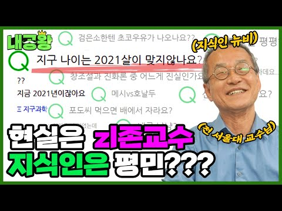

WORKS / 2020.05–2021.07
HUMAN VALUE최재천의 아마존
크리에이터 채널의 데이터를 보며 지식 예능을 제작했습니다. 채널 성장이 더뎌진 시기에 네이버 지식iN의 질문·내공·등급 구조를 가져와 「내공왕」을 공동 기획했습니다.
「내공왕」 공동 기획 · 기획 50%·촬영 75%·편집 30%
← 회사 선택
WHAT I DID
담당 업무와 성과
- 최재천 교수 등 크리에이터 채널의 기획·촬영·편집과 매니지먼트를 맡았습니다.
- 크리에이터의 전문성과 팬들의 호기심을 연결하는 신규 예능 「내공왕」을 공동 기획했습니다.
- 팟빵 교육 방송 녹음·녹화와 주요 증권사 라이브 강의 송출도 진행했습니다.
SELECTED WORKS
주요 작업
다른 회사의 작업
회사별 담당 업무와 대표 사례를 볼 수 있습니다.